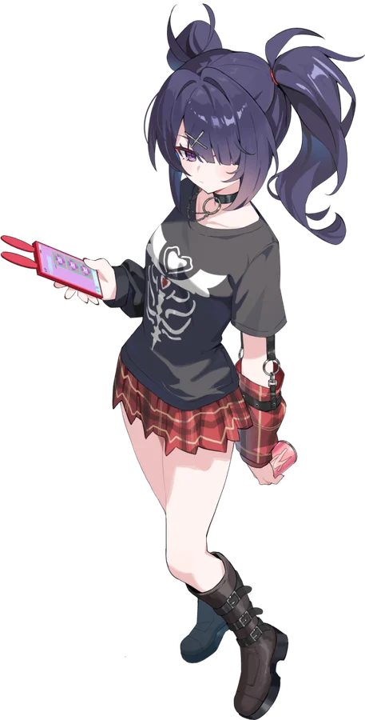
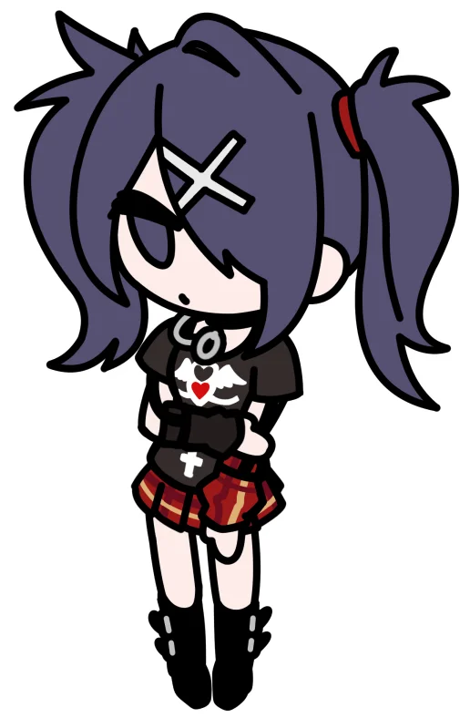
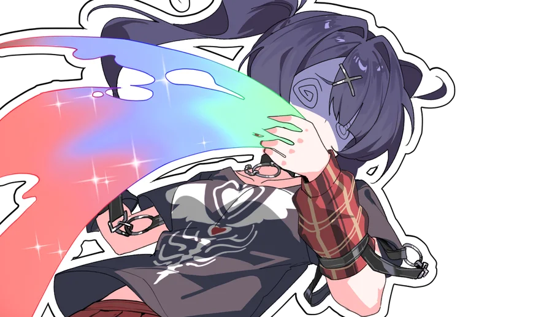
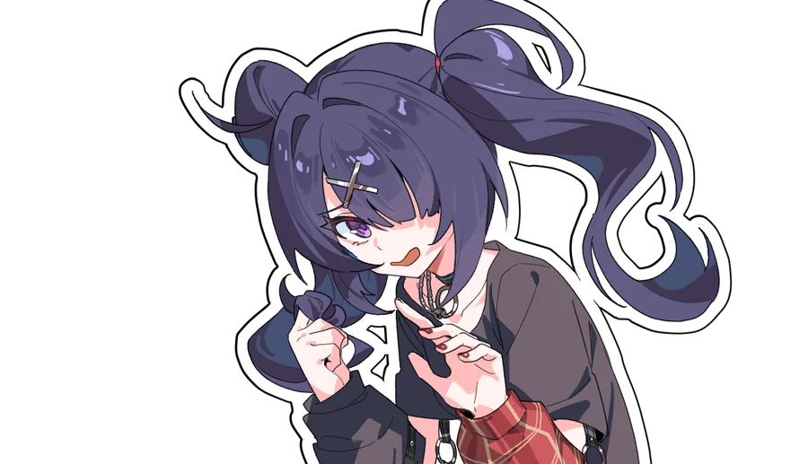
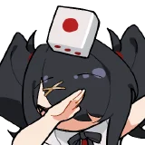
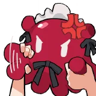

攻击1
防御4
生命9
主动感情过量摄入冷却 3
回复当前爱（每层使自身攻击力+1、防御力-1）层数的生命值，获得爱（每层使自身攻击力+1、防御力-1）层数的移动速度，持续1回合。回合结束时扣除4层爱（每层使自身攻击力+1、防御力-1）。
被动无法承受的爱
受到伤害时，获得1层爱（每层使自身攻击力+1、防御力-1），最多叠加4层。游戏开始时，爱（每层使自身攻击力+1、防御力-1）为2层。
被动一心同体
与超天酱组队的时候，会有神奇的事情发生。
潜能激发
使用主动技能时，如果有4层及以上的爱（每层使自身攻击力+1、防御力-1），使自身最大生命值永久+1、爱（每层使自身攻击力+1、防御力-1）的层数上限+1。
技能细节
“会有神奇的事情发生”指的是超天酱和糖糖会共享部分被动技能效果。具体内容包括： 1、攻击糖糖和被糖糖攻击的怪物也会被施加【粉丝】状态。 2、当怪物拥有【粉丝】且攻击糖糖时，攻击力-1。 3、超天酱受到伤害时，糖糖获得1层爱（每层使自身攻击力+1、防御力-1）。
基础资料
姓名糖糖
英文名Needy Girl
日文名ニーディーガール
从属组织主播女孩重度依赖
上线时间2024-11-29
喜欢食物未知
初始骰子/
礼物/、/、/
徽章月光、/
PVE 特性
- 达到1星时攻击力+1
- 达到2星时攻击力+2
- 达到3星时攻击力+1、移动速度+2
默认


休闲日常



共 8 个表情，点击可放大。


官方 wiki 没有这角色的 /获取 页，头像、名片、卡牌、骰子的完整清单暂缺；下方「档案」里保留了画廊中的零散素材。
画廊其他素材

本地未收录该角色的语音台词。